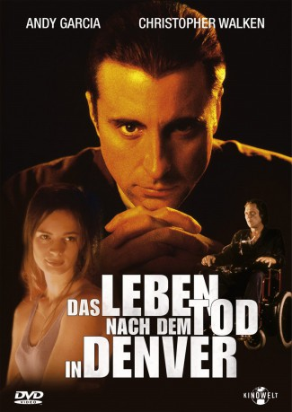

#3627 Das Leben nach dem Tod in Denver
Alternativ: Things to Do in Denver When You're Dead
 
 IMDB-Wertung: 6.8 / 10
IMDB-Wertung: 6.8 / 10  Metascore: 0
Metascore: 0 
Mafia-Film in Tarantino-Manier mit Starbesetzung. Der 'Heilige Jimmy' hat seine Gangster-Karriere eigentlich beendet. Nun will aber der alternde Pate, den alle nur 'Der Mann mit dem Plan' nennen, ausgerechnet ihn um eine kleine Familienangelegenheit zu klären. Jimmy will auf Nummer sicher gehen und holt sich die Hilfe seiner alten Crew... Doch der Plan geht nicht auf.
Jahr: 1995
Dauer: 115 Minuten
FSK: 16
Land: USA Studio: MiramaxTonspuren: DTS - ,
Untertitel:
Auflösung: 720p (1280x696) Größe: 5775 MB
Genre: Drama, Krimi
Regisseur: Gary Fleder
Drehbuch: George Miller
Soundtrack:
Darsteller:
 Andy Garcia als Jimmy 'The Saint' Tosnia
Andy Garcia als Jimmy 'The Saint' Tosnia Christopher Lloyd als Pieces
Christopher Lloyd als Pieces William Forsythe als Franchise
William Forsythe als Franchise Bill Nunn als Easy Wind
Bill Nunn als Easy Wind Treat Williams als Critical Bill
Treat Williams als Critical Bill Jack Warden als Joe Heff
Jack Warden als Joe Heff Steve Buscemi als Mister Shhh
Steve Buscemi als Mister Shhh Fairuza Balk als Lucinda
Fairuza Balk als Lucinda- Gabrielle Anwar als Dagney
 Christopher Walken als The Man with the Plan
Christopher Walken als The Man with the Plan- Michael Nicolosi als Bernard
 Bill Cobbs als Malt
Bill Cobbs als Malt Marshall Bell als Lt. Atwater
Marshall Bell als Lt. Atwater Glenn Plummer als Baby Sinister
Glenn Plummer als Baby Sinister Don Stark als Gus
Don Stark als Gus Willie Garson als Cuffy
Willie Garson als Cuffy- Sarah Trigger als Meg
 Jenny McCarthy als Blonde Nurse
Jenny McCarthy als Blonde Nurse- Buddy Guy als House Band
 Joe Drago als Maitre D'
Joe Drago als Maitre D' Don Cheadle als Rooster
Don Cheadle als Rooster Tommy 'Tiny' Lister als House
Tommy 'Tiny' Lister als House- Susan Merson als Woman with Cancer
 Bill Erwin als 70-Year-Old Man
Bill Erwin als 70-Year-Old Man Craig Braginsky als Man Walking , uncredited
Craig Braginsky als Man Walking , uncredited Josh Charles als Bruce , uncredited
Josh Charles als Bruce , uncredited- Eric Lloyd Scott als House , uncredited
- Harris Laskawy als Ellie
- David Stratton als Alex
- Deborah Strang als Dodie
- Ray Allison als House Band
- Scott Holt als House Band
- Greg Rzab als House Band
- Wiley Harker als Boris Carlotti
- Chuck Bacino als Accordion Player
- Bill Long als 'The Bad Beat' Man
- Cheree Jaeb als 10-Year-Old Girl
- Sarah Levy Arbess als Girl #1
- Larissa Michieli als Girl #2
- Larry Raben als Young Man
- Lynn Applebaum als Young Woman
- Taylor Hayle als Stevie
- Archie Smith als Mr. Jergen
- Harriet Medin als Old Woman
- Bill Bolender als Stevie's Dad
- Nate Ingram als Alley Hood
- Jacob Bergener als Alley Hood
- Larry Curry Jr. als Black Youth
- Ruthay als Receptionist
- Selina Mathews als Cynthia
Datei: X:\1995\Leben nach dem Tod in Denver, Das (1995, FSK16, 1280x696).mkv seit 10.05.2016
Festplatte: HD 1992-1995
 Es gibt insgesamt 85 Filme in der Gruppe '1995'
Es gibt insgesamt 85 Filme in der Gruppe '1995'